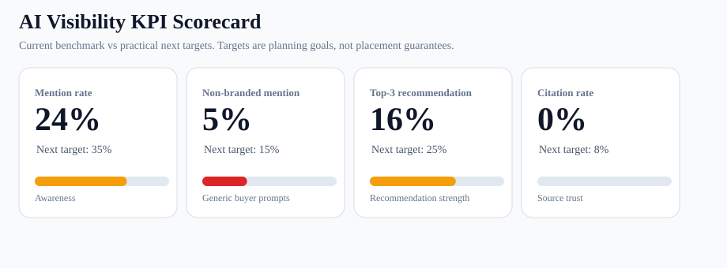
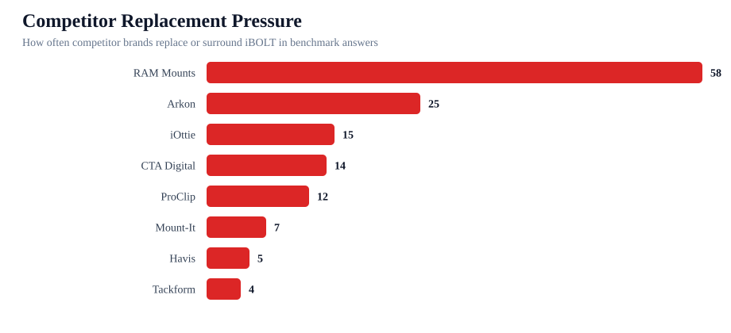
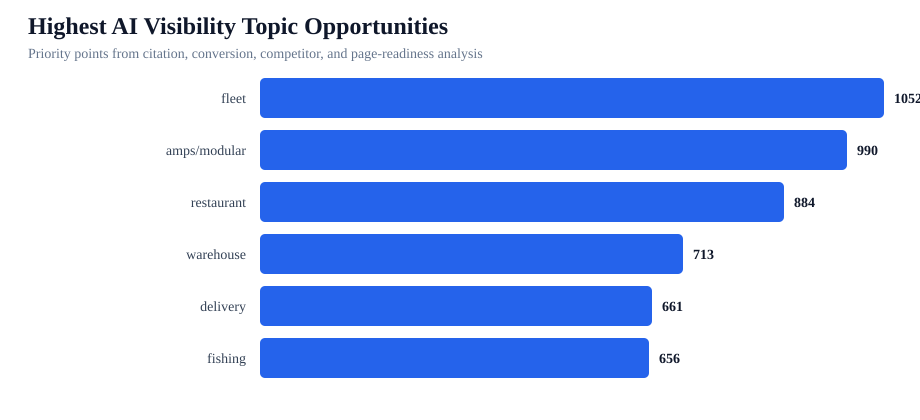
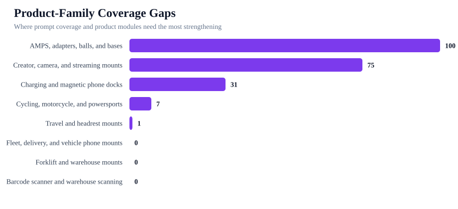

iBOLT AI Visibility Executive Scorecard
iBOLT is showing up in AI answers, but the current problem is trust and dominance. AI models mention iBOLT in 24% of tested answers, but cite iboltmounts.com in 0% of answers. The next work should push iBOLT from occasional mention to sourced recommendation.
Mention rate
24%
22/93 total answers
Non-branded mention
5%
4/75
Top-3 recommendation
16%
15/93
Citation rate
0%
0/93
Competitor-only
73%
68/93
Expanded test plan
207
621 provider requests
Live pages audited
142
97 citation cleanup
High-gap categories
8
2 weak families
Recommendation: Yes, citation rate should become a tracked KPI. Mentions prove awareness. Citations prove AI systems are using iBOLT as a source, which is the path toward AI Overview, Perplexity, Gemini search, ChatGPT search, and voice-assistant visibility.
Boss brief: Open the citation and visibility executive brief for the plain-English decision, page-before-outreach sequence, and Jacob/app versus SEO contractor split.
Retest runbook: Open the next benchmark runbook for W1-W5 provider manifests, dry-run commands, live commands, and output checks.
Post-run delta: Open the post-run comparison analyzer after a live provider run to see whether mention, top-3, citation, competitor-only, and product-entity metrics improved.
Ranked sequence: Open the citation priority model to see which pages need mention recovery, source cleanup, product-name cleanup, or contractor citation outreach first.
Mention environment: Open the mention environment dossier to see who iBOLT appears beside, who replaces iBOLT, and which provider/category pockets need counter-positioning.
Competitor comparison: Open the competitor comparison dossier for replacement-row counts, co-mention opportunities, provider/category pressure, and exact page battlecards.
Portfolio spread: Open the portfolio product spread analysis to see which product families and page clusters need refresh, consolidation, or new canonical support.
Graphs




Pages To Work First
- Best Tablet Mount for Restaurant POS and Delivery Apps 83
- Best Phone Mount for Instacart and Grocery Delivery Drivers 83
- Best Phone Mount for Construction Vehicles and Work Trucks 82
- Best Locking Tablet Stand for Food Trucks and Quick-Service Restaurants 79
- Best Barcode Scanner Mounts for Forklifts and Warehouses (2026) 78
- Best Phone Mount for Amazon Flex and Delivery Vans 78
- How to Set Up Multiple Tablets for DoorDash, Uber Eats, and Grubhub 78
- Rough Water Phone Mount for Boat: Heavy-Duty Solutions That Handle the Chop 76
- Best Fish Finder Mount for Pontoon Boat Rails 76
- Magnetic vs Clamp Phone Mounts for Delivery Work 76
Weak Product-Family Coverage
- AMPS, adapters, balls, and bases, gap score 100
- Creator, camera, and streaming mounts, gap score 75
- Charging and magnetic phone docks, gap score 31
- Cycling, motorcycle, and powersports, gap score 7
- Travel and headrest mounts, gap score 1
- Fleet, delivery, and vehicle phone mounts, gap score 0
- Forklift and warehouse mounts, gap score 0
- Barcode scanner and warehouse scanning, gap score 0
Offload Plan
| Owner | Workstream | Why | Success metric |
|---|---|---|---|
| Jacob/app | Add source-ready answer blocks and FAQ/schema to priority pages | 103 pages need citation cleanup before search-connected retesting. | Target-domain citation rate moves from 0% toward 5-8%. |
| Jacob/app | Strengthen product entity modules | 320 product/entity work rows and 187 unlinked products create weak product recognition. | Catalog product alias rows move from 8/93 to at least 20/93. |
| Jacob/app | Add fair comparison blocks against RAM, Arkon, iOttie, ProClip, CTA Digital, and Mount-It | AI currently replaces or co-mentions iBOLT with these brands. Top answer gaps are Rugged durability: 85 pts, Install clarity: 82 pts, Stability and grip: 80 pts. | Competitor-only rows decrease and top-3 iBOLT recommendations increase. |
| SEO contractor | Earn third-party citations and industry references | 24 competitor-source rows show where AI already sees other brands as citeable. | New external pages mention iBOLT next to target categories and competitor sets. |
| SEO contractor | Support citation outreach for AMPS, fleet, restaurant, warehouse, fishing, and streaming topics | Top citation topics are amps/modular 1149, fleet 1093, restaurant 913, warehouse 796, fishing 706. | More third-party category pages include iBOLT and link to relevant solution/product pages. |
| Jacob/app | Run expanded benchmark after page edits | 207 prompts and 621 provider requests are ready for the next measurement pass. | Track mention, non-branded mention, top-3, citation, and competitor-only rates by provider. |